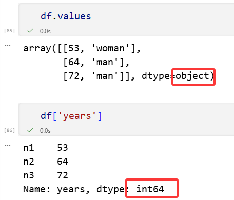
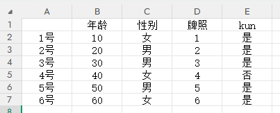
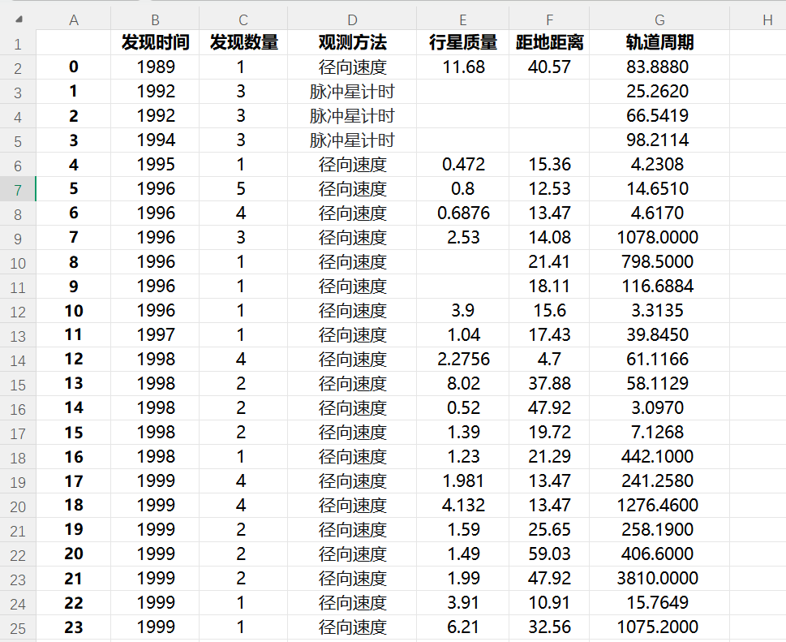

代码
import pandas as pd2026年8月31日
此处为提供的一个代码编辑区，可以帮助你简单的使用Pandas：
pd,即import pandas as pd我们前面学习的NumPy中,可以使用np.array()将列表转换为NumPy数组.同样的,在Pandas中,可以通过pd.Series()函数,将字典转化为Series对象.
{'a': 0, 'b': 0.25, 'c': 0.5, 'd': 0.75, 'e': 1}这种方法还要创建字典，有点太麻烦，个人推荐下面一种方法。
最直接的创建方法是直接给pd.Series()函数参数，其需要两个参数。第一个是参数值values(列表，数组，张量均可)，第二个是键index(索引)
a 0.00
b 0.25
c 0.50
d 0.75
e 1.00
dtype: float64其中，参数index可以省略，省略后索引即从0开始的顺序数字。
Series对象有两个属性: values 和 index
[53 64 72 82]
RangeIndex(start=0, stop=4, step=1)
Index(['一号', '二号', '三号', '四号'], dtype='object')可见，虽然Pandas对象的第一个参数values可以传入列表、数组与张量，但传进去后默认的存储方式是NumPy数组。这一点更加提醒我们，Pandas是建立在NumPy基础上的库，没有NumPy数组库就没有Pandas数据处理库。
当想要Pandas退化为NumPy时，查看其values属性即可。
二维对象将面向矩阵，其不仅有行标签index， 还有列标签columns。
用字典法创建二维对象时，必须基于多个Series对象，每一个Series就是一列数据，相当于对一列一列的数据作拼接。
一号 53
二号 64
三号 72
四号 82
dtype: int64一号 女
二号 男
三号 男
四号 女
dtype: object如果sr1和 sr2 的 index不完全一致，那么二维对象的index会取srl与sr2的index的交集，相应的，该对象就会产生一定数量的缺失值(NaN)。
最直接的创建方法即直接给pd.DataFrame函数参数，其需要三个参数。第一个参数是值values（数组），第二个参数是行标签index，第三个参数是列标签columns。其中，index和columns参数可以省略，省略后即从0开始的顺序数字。
| 年龄 | 性别 | |
|---|---|---|
| 一号 | 53 | 女 |
| 二号 | 64 | 男 |
| 三号 | 72 | 男 |
| 四号 | 82 | 女 |
细心的同学可能会发现端倪，v中NumPy数组居然又含数字又含字符串，上次课中明明讲过数组只能容纳一种变量类型。这里的原理是，数组默默把数字转为了字符串，于是v就是一个字符串型数组。
可以看到，类别为 '<U21'
DataFrame对象的属性有三个：values, index, columns
在学习Pandas的索引之前，需要知道：
Pandas的索引分为显式索引与隐式索引。显式索引是使用Pandas对象提供的索引，而隐式索引是使用数组本身自带的从0开始的索引。
现假设某演示代码中的索引是整数，这个时候显式索引和隐式索引可能会出乱子。于是，Pandas作者发明了索引器loc(显式)与iloc(隐式)，手动告诉程序自己这句话是显式索引还是隐式索引。
本章示例中，若代码块出现两栏，则左侧为显式索引，右侧为隐式索引，左右两列属于平行关系，任选其一均可。
一号 53
二号 64
三号 72
四号 82
dtype: int6472
三号 72
一号 53
dtype: int64
一号 53
二号 64
三号 100
四号 82
dtype: int64使用显式索引的时候，'一号':'三号' 可以涵盖最后一个'三号'但隐式与之前一样。
一号 53
二号 64
三号 72
四号 82
dtype: int64一号 53
二号 64
三号 72
dtype: int64
一号 100
二号 64
三号 72
四号 82
dtype: int64
一号 100
二号 64
三号 200
四号 82
dtype: int64一号 53
二号 64
dtype: int64
一号 100
二号 64
三号 72
四号 82
dtype: int64
一号 100
二号 64
三号 200
四号 82
dtype: int64如果想创建新变量，与NumPy中，使用.copy()方法即可。
在二维对象中，索引器不能去掉，否则会报错，因此必须适应索引器的存在。
| 年龄 | 性别 | |
|---|---|---|
| 一号 | 53 | 女 |
| 二号 | 64 | 男 |
| 三号 | 72 | 男 |
| 四号 | 82 | 女 |
53
性别 年龄
一号 女 53
三号 男 72
年龄 性别
一号 53 女
二号 64 男
三号 100 男
四号 82 女隐式与之前一致，只是把.loc换成了iloc，且索引变成了从0开始的顺序数字。此处就不写了。
| 年龄 | 性别 | |
|---|---|---|
| 一号 | 53 | 女 |
| 二号 | 64 | 男 |
| 三号 | 72 | 男 |
| 四号 | 82 | 女 |
在显示索引中提取矩阵的行或列还有一种简便写法，即:
df.loc['3号]（原理是省略后面的冒号，隐式也可以）df[年龄']（原理是列标签本身就是二维对象的键）有时候提供的大数据很畸形，行是特征，列是个体，这必须要先进行转置。我们最喜欢的数据是一行为一个样本，一列为一个特征
| 1号 | 2号 | 3号 | 4号 | |
|---|---|---|---|---|
| 年龄 | 53 | 64 | 72 | 82 |
| 性别 | 女 | 男 | 男 | 女 |
与NumPy中的左右与上下翻转类似。
考虑到对象是含有行列标签的，.reshape()已不再适用，因此对象的重塑没有那么灵活。但可以做到将sr并入df，也可以将df割出sr。
(1号 10
2号 20
3号 30
4号 40
dtype: int64,
1号 女
2号 男
3号 男
4号 女
dtype: object,
1号 1
2号 2
3号 3
4号 4
dtype: int64)Pandas 中有一个pd.comcat()函数，与np.concatenate()函数语法相似。
(1号 10
2号 20
3号 30
4号 40
dtype: int64,
4号 40
5号 50
6号 60
dtype: int64)值得注意的是，输出的键中出现了两个“4号”，这是因为Pandas对象的属性，放弃了集合与字典索引中 “不可重复” 的特性，实际中，这可以拓展大数据分析与处理的应用场景。那么，如何保证索引是不重复的呢？对对象的属性.index或.columns使用.is_unique即可检查，返回True表示行或列不重复，False表示有重复。
一维对象与二维对象的合并，即可理解为：给二维对象加上一列或者一行。因此，不必使用pd.concat()函数，只需要借助小节“二维对象的索引”语法。
| years | sex | |
|---|---|---|
| num_1 | 20 | man |
| num_2 | 30 | woman |
| num_3 | 40 | man |
| years | sex | money | |
|---|---|---|---|
| num_1 | 20 | man | 10000 |
| num_2 | 30 | woman | 20000 |
| num_3 | 40 | man | 30000 |
依旧适用pd.concat()函数,只是多了axis参数选择.
# 创建 df1, df2, df3
v1 = [[10, 'w'], [20, 'm'], [30, 'm'], [40, 'm']]
v2 = [[1, 'yes'], [2, 'yes'], [3, 'yes'], [4, 'no']]
v3 = [[50, 'm', 5, 'yes'], [60, 'w', 6, 'yes']]
i1 = ['n1', 'n2', 'n3', 'n4']
i2 = ['n1', 'n2', 'n3', 'n4']
i3 = ['n5', 'n6']
c1 = ['years', 'sex']
c2 = ['cards', 'ikun']
c3 = ['years', 'sex', 'cards', 'ikun']
df1 = pd.DataFrame(v1, i1, c1)
df2 = pd.DataFrame(v2, i2, c2)
df3 = pd.DataFrame(v3, i3, c3)
df1, df2, df3( years sex
n1 10 w
n2 20 m
n3 30 m
n4 40 m,
cards ikun
n1 1 yes
n2 2 yes
n3 3 yes
n4 4 no,
years sex cards ikun
n5 50 m 5 yes
n6 60 w 6 yes)| years | sex | |
|---|---|---|
| n1 | 53 | woman |
| n2 | 64 | man |
| n3 | 72 | man |
n1 63
n2 74
n3 82
dtype: int64
n1 530
n2 640
n3 720
dtype: int64
n1 174887470365513049
n2 1152921504606846976
n3 3743906242624487424
dtype: int64n1 63
n2 74
n3 82
Name: years, dtype: int64
n1 530
n2 640
n3 720
Name: years, dtype: int64
n1 174887470365513049
n2 1152921504606846976
n3 3743906242624487424
Name: years, dtype: int64df.values是一个NumPy数组，其整体只能以object类型的混合形式存在，因此之前需要对单独的数字列进行.astype(int)的操作。
df['年龄']是Pandas对象的数字列，Pandas为数据处理而生，尽管整体表现为object，但每一列数据单独存储，因此数字列和字符列完美共存。

对象做运算，必须保证其均是数字型对象，两个对象之间的维度可以不同。
n1 11.0
n2 22.0
n3 33.0
n4 NaN
dtype: float64
********************
n1 9.0
n2 18.0
n3 27.0
n4 NaN
dtype: float64
********************
n1 10.0
n2 40.0
n3 90.0
n4 NaN
dtype: float64( years sex
n1 10 woman
n2 20 man
n3 30 man
n4 40 woman,
cards
n1 1
n2 2
n3 3
n6 6)| years | sex | add | |
|---|---|---|---|
| n1 | 10 | woman | 11.0 |
| n2 | 20 | man | 22.0 |
| n3 | 30 | man | 33.0 |
| n4 | 40 | woman | NaN |
本章的最后，补充两点内容，读者可自行尝试。
np.abs()、np.cos()、np.exp()、np.log()等数学函数时，会保留索引；发现缺失值可以使用.isnull()方法。
n1 False
n2 True
n3 False
n4 False
dtype: bool
1 年龄 牌照
1号 True False
2号 False True
3号 False False
4号 False False
年龄 1
牌照 1
dtype: int64
2除了.isnull()以外，还有一个与之相反的.notnull()方法，但不如在开头加一个非号~即可。如~df.isnull()
剔除缺失值使用.dropna()方法，一维对象很好剔除；二维对象比较复杂，要么单独剔除df中含有缺失值的行，要么剔除df中含有缺失值的列。
n1 53.0
n3 72.0
n4 82.0
dtype: float64 years cards
n3 72.0 3.0
n4 82.0 4.0
Empty DataFrame
Columns: []
Index: [n1, n2, n3, n4]有些同学认为，只要某行含有一个NaN就剔除该个体太过残忍，我们可以设定一个参数，只有当该行全部是NaN，才剔除该列特征。
使用.fillna()方法，实际的数据填充没有统一的方法，非常灵活。
n1 53.0
n2 0.0
n3 72.0
n4 82.0
dtype: float64n1 53.0
n2 53.0
n3 72.0
n4 82.0
dtype: float64
n1 53.0
n2 72.0
n3 72.0
n4 82.0
dtype: float64| years | cards | |
|---|---|---|
| n1 | 0.0 | 0.0 |
| n2 | 64.0 | 0.0 |
| n3 | 72.0 | 3.0 |
| n4 | 82.0 | 4.0 |
| years | cards | |
|---|---|---|
| n1 | 72.666667 | 3.5 |
| n2 | 64.000000 | 3.5 |
| n3 | 72.000000 | 3.0 |
| n4 | 82.000000 | 4.0 |
我们可以先建立如图的一个表格，记得转换为csv文件。放到与代码相同文件夹即可。

| 年龄 | 性别 | 牌照 | kun | |
|---|---|---|---|---|
| 1号 | 10 | 女 | 1 | 是 |
| 2号 | 20 | 男 | 2 | 是 |
| 3号 | 30 | 男 | 3 | 是 |
| 4号 | 40 | 女 | 4 | 否 |
| 5号 | 50 | 男 | 5 | 是 |
| 6号 | 60 | 女 | 6 | 是 |
我们把如图表格导入：

| 发现时间 | 发现数量 | 观测方法 | 行星质量 | 距地距离 | 轨道周期 | |
|---|---|---|---|---|---|---|
| 0 | 1989 | 1 | 径向速度 | 11.680 | 40.57 | 83.8880 |
| 1 | 1992 | 3 | 脉冲星计时 | NaN | NaN | 25.2620 |
| 2 | 1992 | 3 | 脉冲星计时 | NaN | NaN | 66.5419 |
| 3 | 1994 | 3 | 脉冲星计时 | NaN | NaN | 98.2114 |
| 4 | 1995 | 1 | 径向速度 | 0.472 | 15.36 | 4.2308 |
| ... | ... | ... | ... | ... | ... | ... |
| 1030 | 2014 | 1 | 凌日 | NaN | NaN | 2.4650 |
| 1031 | 2014 | 1 | 凌日 | NaN | NaN | 68.9584 |
| 1032 | 2014 | 1 | 凌日 | NaN | 1056.00 | 1.7209 |
| 1033 | 2014 | 1 | 凌日 | NaN | NaN | 66.2620 |
| 1034 | 2014 | 1 | 凌日 | NaN | 470.00 | 0.9255 |
1035 rows × 6 columns
可在输出df时，对其使用df.head()，使其仅输出前5行。
| 发现时间 | 发现数量 | 观测方法 | 行星质量 | 距地距离 | 轨道周期 | |
|---|---|---|---|---|---|---|
| 0 | 1989 | 1 | 径向速度 | 11.680 | 40.57 | 83.8880 |
| 1 | 1992 | 3 | 脉冲星计时 | NaN | NaN | 25.2620 |
| 2 | 1992 | 3 | 脉冲星计时 | NaN | NaN | 66.5419 |
| 3 | 1994 | 3 | 脉冲星计时 | NaN | NaN | 98.2114 |
| 4 | 1995 | 1 | 径向速度 | 0.472 | 15.36 | 4.2308 |
NumPy中所有的聚合函数对Pandas对象均适用。此外，Pandas将这些函数变为对象的方法，这样，不导入NumPy也可使用。
发现时间 2009.070531
发现数量 1.785507
行星质量 2.638161
距地距离 264.069282
轨道周期 2002.917596
dtype: float64发现时间 3.972567
发现数量 1.240976
行星质量 3.818617
距地距离 733.116493
轨道周期 26014.728304
dtype: float64发现时间 2079388
发现数量 1848
观测方法 径向速度脉冲星计时脉冲星计时脉冲星计时径向速度径向速度径向速度径向速度径向速度径向速度径向速...
行星质量 1353.37638
距地距离 213367.98
轨道周期 1986894.2555
dtype: object这些方法都忽略了缺失值，数据NumPy中聚合函数的安全版本。
在数据分析中，用以上方法挨个查看未免太过麻烦，可以使用.describe()方法直接查看所有聚合函数的信息。
| 发现时间 | 发现数量 | 行星质量 | 距地距离 | 轨道周期 | |
|---|---|---|---|---|---|
| count | 1035.000000 | 1035.000000 | 513.000000 | 808.000000 | 992.000000 |
| mean | 2009.070531 | 1.785507 | 2.638161 | 264.069282 | 2002.917596 |
| std | 3.972567 | 1.240976 | 3.818617 | 733.116493 | 26014.728304 |
| min | 1989.000000 | 1.000000 | 0.003600 | 1.350000 | 0.090700 |
| 25% | 2007.000000 | 1.000000 | 0.229000 | 32.560000 | 5.442575 |
| 50% | 2010.000000 | 1.000000 | 1.260000 | 55.250000 | 39.979500 |
| 75% | 2012.000000 | 2.000000 | 3.040000 | 178.500000 | 526.005000 |
| max | 2014.000000 | 7.000000 | 25.000000 | 8500.000000 | 730000.000000 |
第1行count是计数项，统计每个特征的有效数量（即排除缺失值），从count可以看出，行星质量的缺失值比较多，需要考虑一定的办法填充或舍弃。
第2行至第3行的mean与std统计每列特征的均值与标准差。
第4行至第8行的min、25%、50%、75%、max的意思是五个分位点，即把数组从小到大排序后，0%、25%、50%、75%、100%五个位置上的数值的取值。显然，50%分位点即中位数。
数据透视，对数据分析来讲十分重要。
现以泰坦尼克号的生还数据为例，以“是否生还”特征为考察的核心（或者说是神经网络的输出），研究其它特征（输入）与之的关系，如示例所示。
| 性别 | 年龄 | 船舱等级 | 费用 | 是否生还 | |
|---|---|---|---|---|---|
| 0 | 男 | 22.0 | 三等 | 7.2500 | 0 |
| 1 | 女 | 38.0 | 一等 | 71.2833 | 1 |
| 2 | 女 | 26.0 | 三等 | 7.9250 | 1 |
| 3 | 女 | 35.0 | 一等 | 53.1000 | 1 |
| 4 | 男 | 35.0 | 三等 | 8.0500 | 0 |
| 船舱等级 | 一等 | 三等 | 二等 |
|---|---|---|---|
| 性别 | |||
| 女 | 0.968085 | 0.500000 | 0.921053 |
| 男 | 0.368852 | 0.135447 | 0.157407 |
在上述示例中，数据透视表中的数值默认是输出特征“是否生还”的均值（mean），行标签和列标签变成了其它的输入特征。可以看出，女性整体的生还概率是74%，男性整体的生还概率为18%。
而另一个则区分的更细致，按照船舱等级的下降，生还率逐步下降。值得注意的是，pivot_table()方法有一个很重要的参数：aggfunc，其默认值是’mean’，除此以外，所有的聚合函数’max’、‘min’、‘sum’、’count’均可使用。
显然，对于这里的“是否生还”来说，’mean’就是最好的选择，其刚好为概率。
前面的示例只涉及到两个特征，有时需要考察更多特征与输出特征的关系。
这里，将年龄和费用都加进去。但是，这两个特征的数值很分散，之前的性别和船舱等级都可以按照类别分，现在已经不能再按类别分了。因此，需要涉及到数据透视表配套的两个重要函数：pd.cut()与pd.qcut()。
0 (0.0, 25.0]
1 (25.0, 120.0]
2 (25.0, 120.0]
3 (25.0, 120.0]
4 (25.0, 120.0]
...
886 (25.0, 120.0]
887 (0.0, 25.0]
888 NaN
889 (25.0, 120.0]
890 (25.0, 120.0]
Name: 年龄, Length: 891, dtype: category
Categories (2, interval[int64, right]): [(0, 25] < (25, 120]]| 船舱等级 | 一等 | 三等 | 二等 | |
|---|---|---|---|---|
| 性别 | 年龄 | |||
| 女 | (0, 25] | 0.928571 | 0.507692 | 0.965517 |
| (25, 120] | 0.982456 | 0.378378 | 0.888889 | |
| 男 | (0, 25] | 0.500000 | 0.155039 | 0.277778 |
| (25, 120] | 0.379310 | 0.145161 | 0.079365 |
0 (-0.001, 14.454]
1 (14.454, 512.329]
2 (-0.001, 14.454]
3 (14.454, 512.329]
4 (-0.001, 14.454]
...
886 (-0.001, 14.454]
887 (14.454, 512.329]
888 (14.454, 512.329]
889 (14.454, 512.329]
890 (-0.001, 14.454]
Name: 费用, Length: 891, dtype: category
Categories (2, interval[float64, right]): [(-0.001, 14.454] < (14.454, 512.329]]| 船舱等级 | 一等 | 三等 | 二等 | ||||
|---|---|---|---|---|---|---|---|
| 费用 | (-0.001, 14.454] | (14.454, 512.329] | (-0.001, 14.454] | (14.454, 512.329] | (-0.001, 14.454] | (14.454, 512.329] | |
| 性别 | 年龄 | ||||||
| 女 | (0, 25] | NaN | 0.928571 | 0.589744 | 0.384615 | 0.857143 | 1.000000 |
| (25, 120] | NaN | 0.982456 | 0.444444 | 0.315789 | 0.904762 | 0.875000 | |
| 男 | (0, 25] | NaN | 0.500000 | 0.147368 | 0.176471 | 0.055556 | 0.500000 |
| (25, 120] | 0.0 | 0.397590 | 0.134615 | 0.200000 | 0.108108 | 0.038462 | |
当然，这里只演示了4个特征，你可以继续在pivot_table()的index或columns的列表参数里添加其他特征，但也不要添加太多，会很混乱。